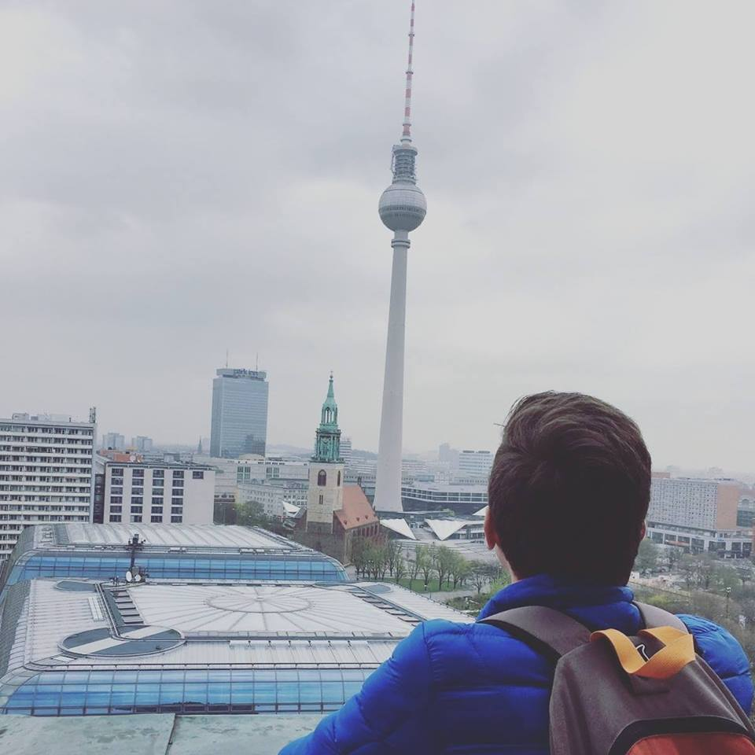
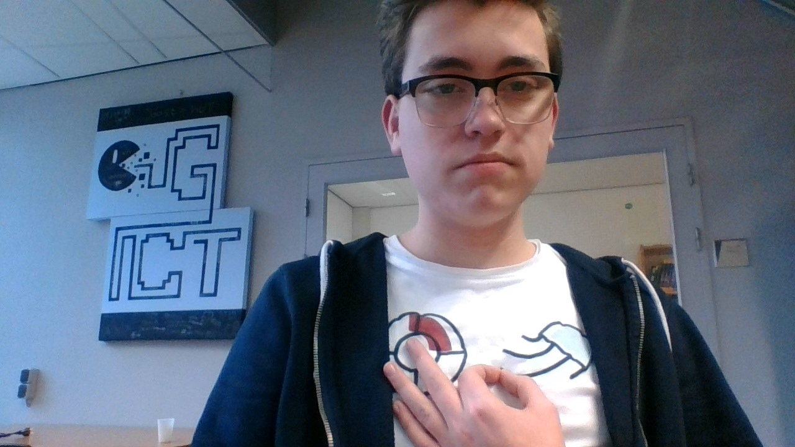
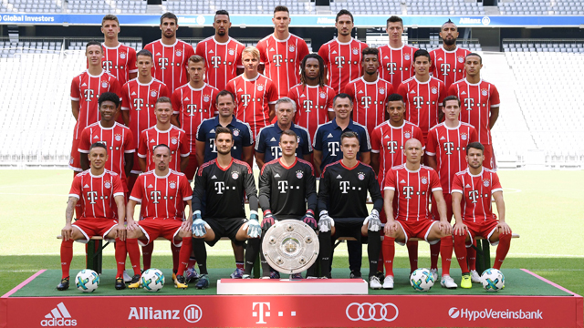

Algemene info
Ik ben Thijs van Weelden, ik ben 16 jaar oud, ik kom uit Boven-Hardinxveld, maar ik ben geboren in Gorinchem. Ik heb een jonger broertje en een jonger zusje.
Ik als persoon
 Mijn doelen zijn om na deze opleiding naar het HBO te gaan. Mijn hobby's zijn fietsen en voetbal kijken. Voornamelijk FC Bayern München. Veel mensen zijn fan van Real Madrid of Barcelona, maar ik niet. Het Duitse voetbal is toch een stukje harder dan dat slappe toneelstuk van een La Liga Santander. De huidige squad is enorm sterk.
In de verdediging: David Alaba op linksachter, Mats Hummels op linker centrale verdediger, Jérôme Boateng op rechter centrale verdediger en Rafinha op rechtsachter. Op het middenveld: Arturo Vidal op linker centrale middevelder,James Rodríguez op centrale aanvallende middenvelder, en op rechter centrale middenvelder heb je Thiago Alcántara. In de aanval: Franck Ribéry op linksbuiten, Robert Lewandowski in de spits, Arjen Robben op rechtsbuiten.
Met dit huidige team en een zeer sterke bank (Thomas Müller, Kingsley Coman, Corentin Tolisso, Javier Martínez en Juan Bernat) gaan we zeker heel ver komen in de Bundesliga en in de Champions League.
